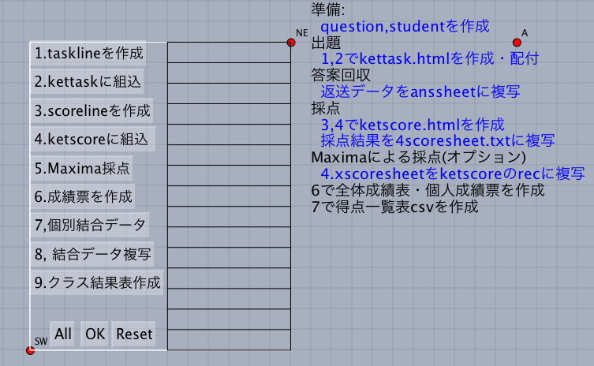

KeTLMS Manual
2022-08-05
- Cinderella
and KeTCindyare necessary
Installing KeTCindy is optional when using this folder.
- Put the file of students list into subfolder data.
01AB (AB,CD are ID's of students）
02CD
...
- Create question files into data (question0728-05.txt,...)
Q
@Find the derivative of the function.@
[1] F(x)=sq(4,1+2x+x^(3))
[2] g(t)=fr(1,(t^(4)+1)^(3))
Sheet
[1]= ::2
[2]= ::2
Ans
1] F'(x)=fr(2+3x^(2),4(1+2x+x^(3))^(tfr(3,4)))
[2] g'(t)=-fr(12t^(3),(t^(4)+1)^(4))
(blank line)
- Creating question html with toolketmathall.cdy.

- 1.taskline => Select student => All => Reset
2.kettask => Select kettaskorgv => All
- Publish kettaskv0728-05.html on the web site,
and share the URL with students.
- Creating scoring html with toolketmathall.cdy
- Copy/Paste returned data from students into data/2anssheet0728-05.txt
Execute 3, 4 of
3 => All => Reset => 4 => Select ketscoreorgv => All
Then, ketscorev0805-01(03).html will be obtained
- Scoring
- Boot up ketscorev0805-01(03).html.
- When scoring finished, push Rec and copy the line.
- Paste the line
into 4scoresheet0805-01(03).txt and save it.